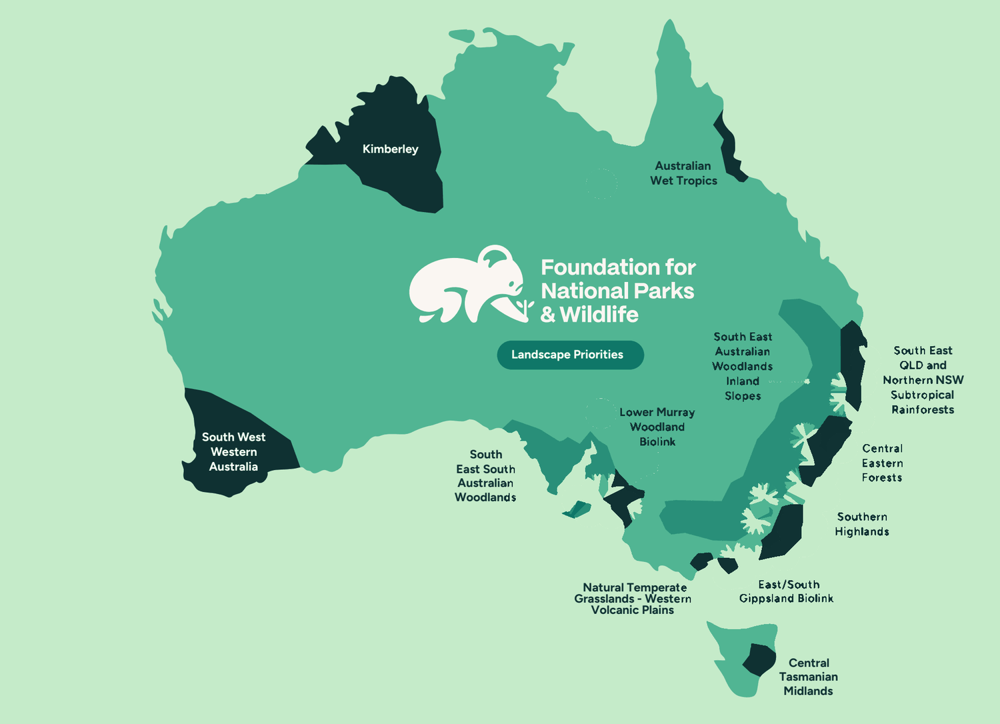

Saving SpeciesQLD
Saving SpeciesQLD
Conservation in action
Our work, place by place.
From the Coorong to the Kimberley, here’s where 55 years of Australian conservation is happening right now.
Explore the work
Every pin is a project. Click to dive in.
Click a pin for a quick look at the project there, then jump to its full story. Locations are approximate; the list below has every project.

Growing National Parks
Saving Species
Healing the Land
81 projects · click a pin
Showing all 83 projects
Want the full story of each pillar? Growing National Parks · Saving Species · Healing the Land
Saving SpeciesQLD Healing LandQLD
Healing LandQLDTangaroa Blue
 Saving SpeciesAustralia
Saving SpeciesAustraliaGenetic Code of Koalas
 Healing LandNSW
Healing LandNSWBushfire Recovery Habitat Restoration
 Saving SpeciesAustralia
Saving SpeciesAustraliaBilby Fire Project
 Saving SpeciesNSW
Saving SpeciesNSWBrush Tailed Rock Wallaby School Education
 Saving SpeciesAustralia
Saving SpeciesAustraliaCaught on Camera
 Saving SpeciesChristmas Island
Saving SpeciesChristmas IslandChristmas Island Reptiles
 Saving SpeciesNSW
Saving SpeciesNSWEastern Bristlebird
 Saving SpeciesNSW
Saving SpeciesNSWEndangered Pomaderris Plants
 Saving SpeciesWA
Saving SpeciesWAFeather Leaved Banksia of Wa
 Growing ParksNSW
Growing ParksNSWGogerlys Point Heritage Precinct
 Saving SpeciesSA
Saving SpeciesSAGranite Island Little Penguins
 Saving SpeciesNorfolk Island
Saving SpeciesNorfolk IslandGreen Parrot Breeding Project
 Healing LandVIC
Healing LandVICHabitats for Koalas in the Otways
 Healing LandWA
Healing LandWAJungurra
 Saving SpeciesSA
Saving SpeciesSAKangaroo Island's Bandicoots
 Saving SpeciesSA
Saving SpeciesSAKangaroo Island's Enigma Moth
 Healing LandNSW
Healing LandNSWKoala Tree Planting
 Healing LandNSW
Healing LandNSWKosciuszko National Park 2020 Fire Recovery
 Growing ParksNSW
Growing ParksNSWKukundi Nature Playspace
 Healing LandNSW
Healing LandNSWLane Cove Bushcare Program
 Saving SpeciesAustralia
Saving SpeciesAustraliaMalleefowl Conservation
 Saving SpeciesNSW
Saving SpeciesNSWManly Little Penguins
 Saving SpeciesNSW
Saving SpeciesNSWMovement of Koalas back into Severely Burnt Forest
 Growing ParksSA
Growing ParksSAMt Schank Walking Trail
 Healing LandNSW
Healing LandNSWPetaurus Connections
 Saving SpeciesAustralia
Saving SpeciesAustraliaQuolls
 Saving SpeciesWA
Saving SpeciesWARed Tailed Phascogale
 Healing LandQLD
Healing LandQLDRedlands Koala Planting
 Growing ParksSA
Growing ParksSARemarkable Southern Flinders
 Healing LandNSW
Healing LandNSWRestoring the Glideways of K2W
 Healing LandAustralia
Healing LandAustraliaSeagrass Collaboration
 Saving SpeciesNSW
Saving SpeciesNSWSouthern Highlands Koala Conservation
 Saving SpeciesTAS
Saving SpeciesTASTassie Devil Roadkill
 Saving SpeciesAustralia
Saving SpeciesAustraliaThe Great Koala Count
 Growing ParksQLD
Growing ParksQLDTrails for Tails
 Saving SpeciesWA
Saving SpeciesWAWA Bird Watering Stations
 Healing LandNT
Healing LandNTWarddeken Mayh
 Saving SpeciesWA
Saving SpeciesWAWA's Woylie Survival
 Saving SpeciesWA
Saving SpeciesWAWestern Swamp Tortoise
 Growing ParksNSW
Growing ParksNSWWoomargama National Park
 Healing LandSA
Healing LandSAYarning Online, On Country: Kurrupurra Pila Weaving
 Healing LandNSW
Healing LandNSWYarrahapinni Wetlands Restoration Stage 1
 Saving SpeciesVIC
Saving SpeciesVICYouth Wildlife Ambassadors
 Saving SpeciesNSW
Saving SpeciesNSWNectarlovers
 Growing ParksSA
Growing ParksSAEnhancing Biodiversity & Protecting Cultural Heritage at Torrens Island
 Saving SpeciesAustralia
Saving SpeciesAustraliaFNPW Koala Projects
 Growing ParksSA
Growing ParksSANilpena National Park
 Saving SpeciesNSW
Saving SpeciesNSWAussie Ark Quolls
Saving SpeciesNSWLion Island Little Penguin
Saving SpeciesNSWImpact of Bushfires on Koalas
 Saving SpeciesNSW
Saving SpeciesNSWAlpine Frogs: A Calling
 Healing LandWA
Healing LandWANgurrawaana Ranger Habitat Conservation
 Growing ParksNSW
Growing ParksNSWHeritage Estates
 Saving SpeciesAustralia
Saving SpeciesAustralia1 Million Turtles
 Healing LandAustralia
Healing LandAustraliaNative Plant Nurseries
 Healing LandAustralia
Healing LandAustraliaCultivating Koala Habitat
 Saving SpeciesVIC
Saving SpeciesVICMountain Pygmy Possum
Healing LandAustraliaWild Heart
 Healing LandAustralia
Healing LandAustraliaBushfire Recovery Program
 Healing LandAustralia
Healing LandAustraliaFire Wise
 Growing ParksNSW
Growing ParksNSWSturt National Park
 Saving SpeciesAustralia
Saving SpeciesAustraliaWildlife Heroes
 Healing LandWA
Healing LandWABlack Cockatoo Corridor
Healing LandAustraliaMemorial Trees
 Saving SpeciesVIC
Saving SpeciesVICBandicoot Superhighway Project
 Healing LandTAS
Healing LandTASStudents Dig in for Conservation
 Saving SpeciesNSW
Saving SpeciesNSWDevil Ark
 Healing LandAustralia
Healing LandAustraliaBushfire Recovery Seedbanks
 Healing LandQLD
Healing LandQLDMary Valley Rail Trail Habitat Link
 Saving SpeciesTAS
Saving SpeciesTASSave the Orange Bellied Parrot
 Saving SpeciesVIC
Saving SpeciesVICRecovering Blue Butterflies in Victoria
 Healing LandNSW
Healing LandNSWRestoring Campbells Wetland Walkway
 Saving SpeciesVIC
Saving SpeciesVICNest Boxes in Plenty Gorge Park
 Saving SpeciesAustralia
Saving SpeciesAustraliaBackyard Buddies
 Saving SpeciesNT
Saving SpeciesNTWhite Throated Grasswren
 Growing ParksTAS
Growing ParksTASMount Field National Park
 Healing LandAustralia
Healing LandAustraliaBooningyah Junior Rangers Program
 Growing ParksVIC
Growing ParksVICDalki Garringa Botanic Park
 Healing LandAustralia
Healing LandAustraliaGift a Tree for Nature Conservation
 Saving SpeciesAustralia
Saving SpeciesAustraliaCurb Wombat Mange Program
Saving SpeciesAustraliaSupporting Community Led Treatment to Protect Bare Nosed Wombats
Stay connected
Field updates from the people on the ground.
Monthly stories about new projects, species wins, and ways to get involved.